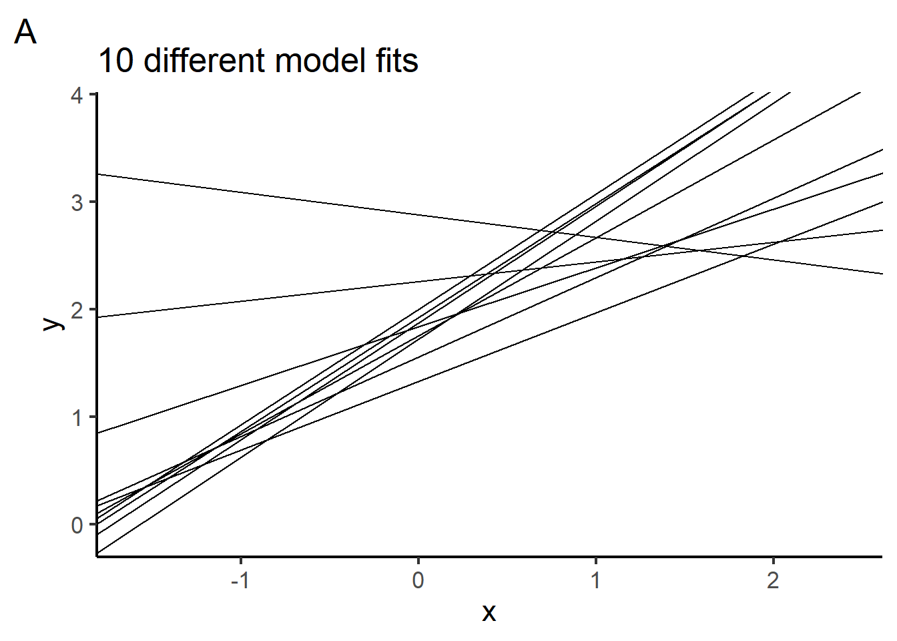
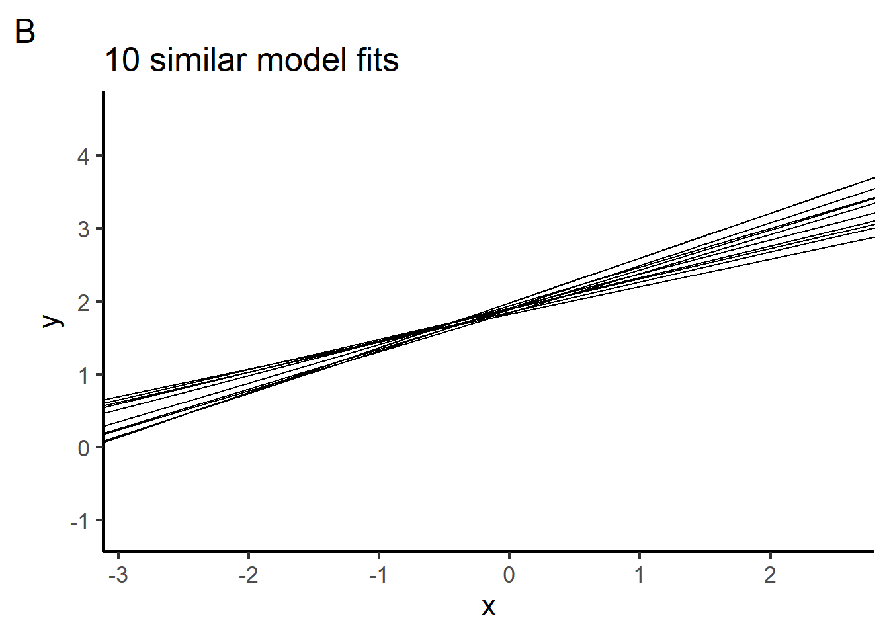
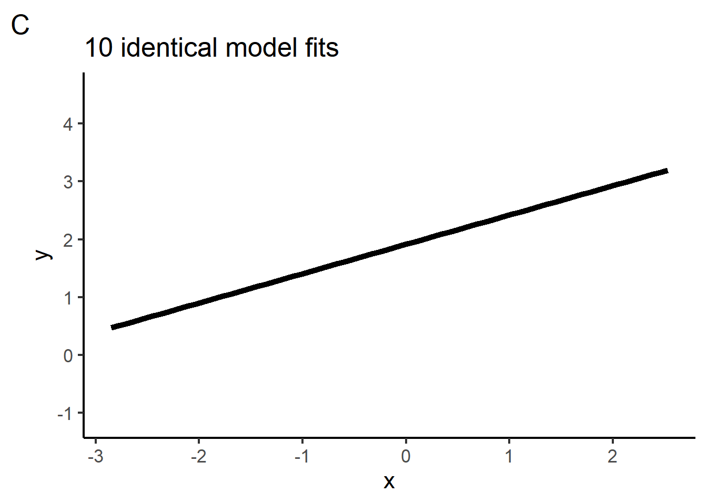

Quiz 4
Data Science for Studying Language & the Mind
You may need more time if programming is completely new to you, or less if you have some experience already.
Instructions
- The quiz is closed book/note/computer/phone
- If you need to use the restroom, leave your exam and phone with the TA
- You have 60 minutes to complete the quiz. If you finish early, you may turn in your quiz and leave early
1 Model reliability
True or false, as we collect more data, the confidence interval around our parameter estimates gets bigger (wider).
- True
- False
Model reliability asks how certain we can be about our parameter estimates. Why is there uncertainty around our parameter estimates?
True or false, a model with low reliability also has low accuracy.
- True
- False
Suppose we conduct an experiment by drawing a random sample from the population. We fit a linear model to these data. Then we repeat our experiment 10 times, fitting the same model each time. Which figure could show the fitted models for the 10 experiments? Choose all that apply.



- Figure A
- Figure B
- Figure C
2. Nonlinear models
Circle the figure below that plots the model represented by the equation \(y = \beta_0 + \beta_1x_1 + \beta_2x_1^2\)

Which of the model specifications expresses a cubic polynomial model in R?
y ~ poly(x, 1)y ~ poly(x, 2)y ~ poly(x, 3)y ~ poly(x, 4)
True or false, we can use
lm()to fit a quadratic polynomial.TrueFalse
Which of the following aspects of model building apply to nonlinear models? Choose all that apply.
- model specification
- model fitting
- model accuracy
- model reliability
3. Classification
True or false, logistic regression is a linear classificaiton model.
- True
- False
What is the difference between regression and classification?
What accuracy metric(s) have we been applying to classification models? Choose all that apply.
- Percent correct
- \(R^2\)
- RMSE
- Sum of squared error
True or false, each of the following figures can be modeled with a linear classifier.

- True
- False
4. Classification in R
Which of the following can be used to fit a logistic regression model in R? Choose all that apply.
lm()glm()poly()log()
True or false, the link function in a generalized linear model must be the logistic function.
- True
- False
Which of the following fits a logistic regression model in R? Choose all that apply.
# code A glm(y ~ x, data = data, family = "binomial") # code B data %>% specify(y ~ x) %>% fit() # code C linear_reg %>% set_engine("lm") %>% fit(y ~ x, data = data)- Code A
- Code B
- Code C
What 3 elements do all generalized linear models have?